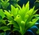

PANORAMICA
Il tuo acquario
Valori dell’acqua
Attività di oggi
0/3Registra i primi test per seguire l’andamento dell’acqua.
Accessi rapidi
Registra i valori reali della tua vasca. I valori ideali dipendono dagli abitanti e dal tipo di acquario.
CONFIGURAZIONE
Il mio acquario
Acquario principale
Configura i dettagli della tua vasca
Attrezzatura
Aggiungi filtro, riscaldatore, illuminazione e CO₂ nelle note dell’allestimento. I campi sono generici e non precompilati.
Dettagli della vasca
Dati e privacy
I dati sono salvati in questo browser. Esporta una copia dal Diario prima di cancellarli.
MONITORAGGIO
Valori dell’acqua
Scorri lateralmente per vedere tutti i parametri. Gli intervalli sono orientativi e dipendono dalla vasca.
PASSO DOPO PASSO
Guida
Tutto quello che ti serve per allestire e mantenere il tuo acquario.
Categorie principali
Guide rapide
VERDE IN ACQUARIO
Piante
Scopri le specie e gestisci quelle presenti nella tua vasca.
Verifica sempre la compatibilità della specie con acqua, luce, temperatura e dimensioni della vasca.
Scheda pianta

Pogostemon Erectus
Descrizione e cura
STORICO DELLA VASCA
Diario
Tieni traccia di test, interventi e osservazioni.
DATI E TENDENZE
Analisi
Confronta misurazioni e intervalli indicativi.
Registra test per visualizzare l’andamento.
Andamento
Valori principali
REGISTRA NEL DIARIO
Aggiungi evento
IN BASE AI TUOI DATI
Consigli
Suggerimenti contestuali, senza interventi inutili.